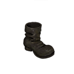
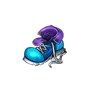
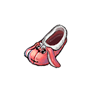
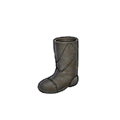

Получено: файл; исходный URL. Иллюстрация в отдельной статье ViveR_9 «Обувная коллекция»; исходный файл без перекодирования. Авторство отдельно не установлено. Страница: источник.

Обувная коллекция
ВКонтакте; дата источника не указана- Тип
- Коллекции
- Версия и дата
- ВКонтакте; дата источника не указана
Элементы коллекции













Данные по источнику · ВКонтакте · дата источника не указана
Предварительно: один источник; требует сверки. Требуется сверка.
- Награда
- Перец чили и 100 опыта
- Где копать
- Сундуки, грядки, чучело Санты, мост, забор
- Состав (источник Zombie-island)
- Сапог; Ботинок; Туфелька; Тапок; Валенок.
- Награда (источник Zombie-island)
- 1 Перец Чили; 100 Опыт.
- Где копать Обувную коллекцию в Зомби Ферме лопатами
- Золотой миллиард; Рыбак; Рыбак с мозгами; Кладоискател; Кладоискател с мозгами; Японский сад; Джокер; Китайская башня; Китайская стена; Мост; Катапульта; Марафонец; Флаг Марафонца; Груда камней; Камень средний; Камень большой; Валун поменьше; Валун; Маленький зимний валун; Средний зимний валун; Большой зимний валун; Кварц 1; Кварц 2; Кварц 3; Дуб маленький; Дуб средний; Дуб большой; Дуб огромный; Ель маленькая; Ель средняя; Ель большая; Маленькая зимняя елка; Средняя зимняя елка; Большая зимняя елка; Столб Золотой; Столб-Символ; Беседка; Забор; Чучело Санты; Настил бамбуковый; Лампа садовая; Садовая ограда; Замшелый камень; Замшелый камешек; Хвойник маленький; Хвойник средний; Хвойник большой; Кустарник малый; Кустарник большой; Сакура в цвету; Сувенирная сакура; Весенняя ваза 3; Весенняя ваза 2; Весенняя ваза 1.
- Обувная коллекция выпадает из мешков Кладоискателей
- Кладоискатель; Кладоискатель с мозгами.
- Обувную можно найти при сборе урожая и вскапывании земли
- Грядка; Кусок земли.
- Обувная коллекция выпадает из ценностей и Секретных кладов
- Секретный клад; Сундук Чудовища; Термо-яйцо; Простое; Сапоги-скороходы; Коллекционер; Коллекционная посылка; Коллекционный.
Данные по источнику · ВКонтакте, ZombieS Forever · дата редакции не установлена
Предварительно: Историческая фанатская страница; независимость от других источников не установлена. Возможны различия версий и дат.. Требуется сверка.
- Награда по ZombieS Forever
- 100 опыта и перец чили
- Места получения: выборка из источника
- Сундуки, грядки, чучело Санты, мост и др.
Данные по источнику · браузерная версия; платформа в ответе не уточнена · Дата на странице (формат не уточнён): 23/03/2015
Предварительно: Ответ справочного сайта; достоверность и независимость от других фанатских источников не установлены. Возможны различия редакций и версии.. Требуется сверка.
- Ответ источника
- Обувная коллекция в Зомби Ферме состоит из 5 предметов, за которые можно получить один перец чили и сто баллов экспириенса. Предметы, входящие в состав этой коллекции, могут быть найдены с помощью лопат под золотым миллиардом, джокером, мостом, Китайской стеной, кладоискателем, грудой камней, Японским садом, катапультой, кварцем, валунами, дубами разных размеров, елками, заборами, бамбуковым настилом и множеством других зданий, предметов и декораций. Также Обувная коллекция иногда находится в секретном кладе или в сундуке чудовища, а может просто выпасть из мешков кладоискателей, как с мозгами, так и без них.
Данные по источнику · браузерная версия; платформа не указана · дата редакции не установлена
Предварительно: Содержимое списка: изображения и колонки могут терять смысл при извлечении текста; отдельная страница и дата не проверены. Подписи alt иногда ошибочны.. Требуется сверка.
- Текст карточки из каталога
- Перец чили и 100 опыта Сапог Ботинок Туфелька Тапок Валенок Где копать: сундуки, грядки, Забор (полукругом), деревья, Мост, плюшевые "Ф", "Ш"
Данные по источнику · Мой Мир (Mail.ru); историческая таблица · дата редакции не установлена
Предварительно: Источник сам использует знаки вопроса; не следует считать такие места подтверждёнными. Возможны изменения патча и платформы; независимость от других справочников не доказана.. Требуется сверка.
- Название в источнике
- Обувная коллекция
- Где копать
- сундуки, грядки, Забор (полукругом), деревья, Мост, плюшевые "Ф", "Ш"
- Награда
- Перец чили и 100 опыта
Данные по источнику · браузерная версия; на сайте указана игра ВКонтакте · дата редакции не установлена
Предварительно: Исторический текст; сильно совпадает со справкой Zommbie.at.ua, независимость не доказана. Отрицания и доступность могут измениться с патчем.. Требуется сверка.
- Где искать по странице «Зомбастики»
- Деревья, камни, чучело санты, кладоискатель, беседка.
Данные по источнику · историческая браузерная социальная версия ВКонтакте; редакция неизвестна · дата публикации и последующей редакции не проверена
Предварительно: Фанатский источник; актуальность, вероятности и независимость от других справочников не установлены.. Требуется сверка.
- Состав
- Сапог, Ботинок, Туфелька, Тапок, Валенок.
- Обмен
- 1 Перец Чили и 100 опыта.
- Получение
- Среди ценностей Золотой росток, Простое, Термо-яйцо, Праздничный торт, Сундук Чудовища, Коллекционная посылка, Чемодан; также Кладоискатели.
- Палочки
- Октавий, Пианистка, Пончик отважный; различные виды деревьев, камней, мрамора, кристаллов, снежных пиков и подземного фонаря, конкретные варианты приведены в статье.
- Лопаты у друзей
- Катапульта, Любовь Слоника, Флаг Марафонца, Джокер, Деталь механизма, Японский сад, Китайская башня, Дерево Любви, Китайская стена, Беседка, Чучело Санты и прочий декор, а также Секретный клад.
- Применение
- В создании чертовой обуви, Шерсти и Очень страшной коллекции, а также в заданиях; источник не приводит количества.
Данные по источнику · историческая браузерная версия, платформа не указана · 10.01.2014 — дата в каталоге; дата редакции материала неизвестна
Предварительно: Фанатский список без вероятностей и уточнения площадки; независимость от других источников не установлена.. Требуется сверка.
- Где искать по списку сайта
- Деревья, камни, чучело санты, кладоискатель, беседка
- Оговорка
- Список может относиться к разным условиям, инструментам и периодам игры; не доказывает гарантированное выпадение. Заявления «только» и «невозможно» относятся лишь к времени и версии источника.
Данные по источнику · историческая браузерная игра; площадка не уточнена · 28.02.2013 — дата каталога; редакция неизвестна
Предварительно: Проверен текст в каталоге сайта; вероятность выпадения не указана. Исторические версии и даты могут различаться; списки и награды требуют сверки, независимость сайта от других справочников не установлена.. Требуется сверка.
- Награда в источнике
- Перец чили и 100 опыта
- Места в источнике
- Сундуки, грядки, забор, деревья, мост, плюшевые буквы Ф и Ш.
Данные по источнику · браузерная игра; социальная сеть не указана · 14.04.2015 — дата статьи; дата последних правок неизвестна
Предварительно: Фанатские источники могут быть зависимыми; сверены только отмеченные факты, вероятности и актуальность не подтверждены.. Требуется сверка.
- Состав
- Автор перечисляет тапки, сапоги, ботинки, туфли и валенки; сопоставимые элементы указаны в Zombie-island.
- Где искать
- Указаны Японский сад, Китайская стена, камни и зимние валуны, деревья, мост, чучело Санты, мешки кладоискателей, Сундук Чудовища и Секретный клад. Награда не гарантируется.
Связанные сущности
нет проверенных связей — требуется сверка.
Источники
- прочитано; проверка 2026-11-21
- прочитано: Zombie-island.moy.su; проверка 2026-11-21
- FatalGame: прочитан отдельный ответ; дата на странице 23/03/2015
- ZOMBIA: прочитана карточка в списке
- Ссылка на отдельную страницу; отдельно не проверена
- Zombiemail: строка таблицы коллекций; Мой Мир
- Зомбастики: прочитана соответствующая строка; возможная копия другого справочника
- ViveR_9: прочитанная отдельная статья
- zommbie.at.ua: где искать коллекции
- zombi-ferma.ucoz.net: каталог коллекций
- FatalGame: отдельная статья, выборочная сверка